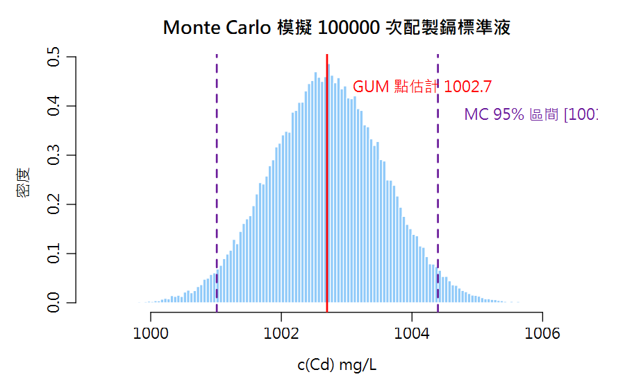
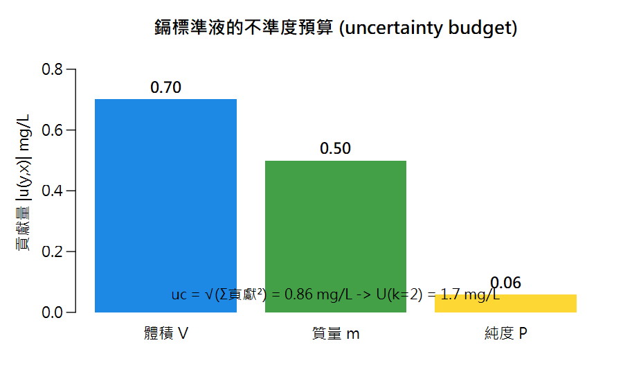

Part 2 量測不確定度（QUAM Appendix E.2–E.3）／第 9 章
數值方法：Kragten 試算表法與 Monte Carlo Numerical Approaches — 不想算偏微分的救星
傳播公式要你算偏微分。如果你看到 ∂ 就想關書——這一章是為你寫的：兩招不用微積分的方法，答案還能互相驗證。
🔑 課前暖身
不想碰偏微分？沒問題。讓電腦替你「擲一萬次骰子」：把每個誤差來源當骰子模擬（Monte Carlo），
或一次只動一個零件看誰影響最大（Kragten）。三種算法答案幾乎一樣——這本身就是最好的互相驗證。
本章新詞先認識：Kragten 法＝試算表式的一次動一項；Monte Carlo＝大規模電腦模擬；涵蓋區間＝模擬出來的 95% 範圍。
名詞卡住了？回 Ch0 名詞圖鑑 查白話解釋與比喻。
本章新詞先認識：Kragten 法＝試算表式的一次動一項；Monte Carlo＝大規模電腦模擬；涵蓋區間＝模擬出來的 95% 範圍。
名詞卡住了？回 Ch0 名詞圖鑑 查白話解釋與比喻。
學習目標
- 理解 Kragten 法＝用「加一點、重算一次」取代偏微分
- 理解 Monte Carlo＝把輸入量當分布，抽樣 10 萬次看結果分布
- 完成鎘標準液案例的三方法對照（解析法 / Kragten / MC）
- 知道什麼時候必須放棄解析法改用模擬
9.1 回到鎘標準液：三種合成方法
cCd = 1000 × m × PV = 1002.7 mg/L
其中 m 為鎘金屬質量 = 100.28 mg (u=0.05)、P 為純度 = 0.9999 (u=0.000058)、V 為體積 = 100.0 mL (u=0.07)——QUAM Table A1.1 案例
方法一：解析法（Rule 2）
ucc = \(\sqrt{( (u(m)/m)² + (u(P)/P)² + (u(V)/V)² )}\)
= \(\sqrt{(0.0005² + 0.000058² + 0.0007²)}\) = 0.00086
uc = 1002.7 × 0.00086 ≈ 0.9 mg/L（QUAM Table A1.1 完全一致）
uc = 1002.7 × 0.00086 ≈ 0.9 mg/L（QUAM Table A1.1 完全一致）
方法二：Kragten 數值微分（QUAM Appendix E.2）
偏微分的數值近似：把某一輸入量 xi 加上自己的 u(xi)， 重算 y，兩次結果的差就是該成分的貢獻：
u(y, xi) ≈ y(x1, …, xi+u(xi), …) − y(x1, …, xi, …)
這正是 Excel 試算表「複製欄、改一格」的 Kragten 技巧——R 一個迴圈就搞定
方法三：Monte Carlo 模擬（QUAM Appendix E.3, GUM S1）
不再算任何公式——把每個輸入量視為機率分布，隨機抽 N 組， 計算 N 個 y，直接用 y 的分布回答問題：

圖 9-1 100,000 次虛擬配製的 c(Cd) 分布：MC 95% 區間與解析法 U 幾乎重疊
# ============ 鎘標準液：三方法對照 ============
m <- 100.28; u_m <- 0.05
P <- 0.9999; u_P <- 0.000058
V <- 100.0; u_V <- 0.07
conc <- function(m,P,V) 1000*m*P/V
c_Cd <- conc(m,P,V) #> 1002.7 mg/L
# (1) 解析法 Rule 2
uc1 <- c_Cd * sqrt((u_m/m)^2 + (u_P/P)^2 + (u_V/V)^2)
round(uc1, 2) #> 0.86
# (2) Kragten 數值微分
kragten <- function(f, x, u) {
y0 <- do.call(f, x)
contrib <- sapply(seq_along(x), function(i) {
xi <- x; xi[[i]] <- xi[[i]] + u[[i]]
do.call(f, xi) - y0
})
list(contrib = contrib, uc = sqrt(sum(contrib^2)))
}
res <- kragten(conc, list(m,P,V), list(u_m,u_P,u_V))
round(res$contrib, 3) #> 0.500 0.058 -0.701 (m, P, V 的貢獻；V 在分母故為負)
round(res$uc, 2) #> 0.86 <- 與解析法一致!
# (3) Monte Carlo
set.seed(2024); N <- 100000
y_mc <- conc(rnorm(N,m,u_m), rnorm(N,P,u_P), rnorm(N,V,u_V))
sd(y_mc) #> ~0.86 (同樣一致!)
round(quantile(y_mc, c(.025,.975)), 1)
#> 2.5% 97.5%
#> 1001.0 1004.4 <- 95% 涵蓋區間，直接可得
barplot(res$contrib, names.arg=c("質量 m","純度 P","體積 V"),
col=c("#43A047","#FDD835","#1E88E5"), las=1, border=NA,
main="鎘標準液：各成分貢獻 |u(y,x)|",
ylab="mg/L")
R Console輸出 output
[1] 0.86 [1] 0.500 0.058 -0.701 [1] 0.86 [1] 0.8633508 2.5% 97.5% 1001.0 1004.4

圖 9-2 鎘標準液的不確定度預算：體積 (0.70) > 質量 (0.50) ≫ 純度 (0.06)
9.2 何時必須放棄解析法？
| 情境 | 原因 | 解方 |
|---|---|---|
| 模型高度非線性 | Rule 1/2 的線性近似失效（u(x)/x 不小） | Kragten 或 MC |
| 結果分布不對稱 | 近零結果、乘除鏈長、指數模型 | MC 直接給不對稱區間（QUAM §9.6） |
| 輸入分布混合（矩形+常態+三角） | 合成分布不是常態，k=2 不精確 | MC 用分位數給涵蓋區間 |
| 想快速做「what-if」 | 改一個 u 看結果變化 | Kragten 試算表改一格即更新 |
✅ QUAM 的建議（§8.2.5）
「建議對所有非最簡單的案例使用試算表法或 Monte Carlo 等數值方法。」
——解析法用來理解，數值法用來交付。
📊 Excel 也會算：Kragten 與 Monte Carlo
📊 沒有 R 也能動手
本章兩招本來就是為試算表設計的——Excel 完全做得出來：
鎘標準液：m=100.28、P=0.9999、V=100.0，y=1000*m*P/V=1002.7。
Excel MC 的 uc 會落在 0.86 附近——與解析法一致。按 F9 重算可看模擬跳動。
| 方法 | Excel 做法 |
|---|---|
| Kragten | ① 第一欄算基準 y=f(m,P,V) ② 複製三欄，每欄只把一個輸入改成「值+u」 ③ 各欄 y 與基準的差 = 該來源貢獻 ④ 貢獻平方和開根號 = uc |
| Monte Carlo | ① 各輸入加隨機擾動：=m+NORMINV(RAND(),0,u_m)② 算 N=1000 列的 y ③ =STDEV(y欄) 即 uc；=PERCENTILE(y欄,0.025) 得 95% 區間 |